Radicales
Radical
Un radical es una expresión de la forma  , en la que n
, en la que n 
 y a
y a 
 ; con tal que cuando a sea negativo, n ha de ser impar.
; con tal que cuando a sea negativo, n ha de ser impar.
Potencias y radicales
Se puede expresar un radical en forma de potencia:

Radiales equivalentes
Utilizando la notación de exponente fraccionario y la propiedad de las fracciones que dice que si se multiplica numerador y denominador por un mismo número la fracción es equivalente, obtenemos que:

Si se multiplican o dividen el índice y el exponente de un radical por un mismo número natural, se obtiene otro radical equivalente.
Simplificación de radicales
Si existe un número natural que divida al índice y al exponente (o los exponentes) del radicando, se obtiene un radical simplificado.
Reducción a índice común
1Hallamos el mínimo común múltiplo de los índices, que será el común índice
2Dividimos el común índice por cada uno de los índices y cada resultado obtenido se multiplica por sus exponentes correspondientes.
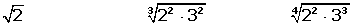

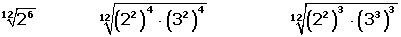
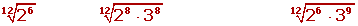
Extracción de factores en un radical
Se descompone el radicando en factores. Si:
1 Un exponente es menor que el índice, el factor correspondiente se deja en el radicando.
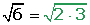
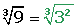
2Un exponente es igual al índice, el factor correspondiente sale fuera del radicando.
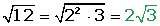
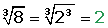
3Un exponente es mayor que el índice, se divide dicho exponente por el índice. El cociente obtenido es el exponente del factor fuera del radicando y el resto es el exponente del factor dentro del radicando.
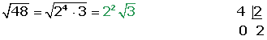
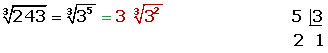


Introducción de factores en un radical
Se introducen los factores elevados al índice correspondiente del radical.


Suma
Solamente pueden sumarse (o restarse) dos radicales cuando son radicales semejantes, es decir, si son radicales con el mismo índice e igual radicando.
Introducción de factores en un radical
Se introducen los factores elevados al índice correspondiente del radical.


Radicales del mismo índice
Para multiplicar radicales con el mismo índice se multiplican los radicandos y se deja el mismo índice.


Cuando terminemos de realizar una operación extraeremos factores del radical, si es posible.
Radicales de distinto índice
Primero se reducen a índice común y luego se multiplican.


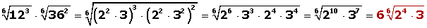
Radicales del mismo índice
Para dividir radicales con el mismo índice se dividen los radicandos y se deja el mismo índice.
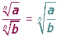
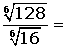

Radicales de distinto índice
Primero se reducen a índice común y luego se dividen.

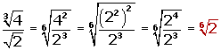
Cuando terminemos de realizar una operación simplificaremos el radical, si es posible.


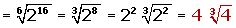
Potencia
Para elevar un radical a una potencia, se eleva a dicha potencia el radicando y se deja el mismo índice.
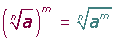
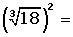


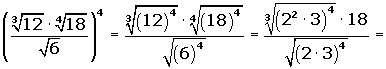
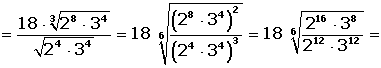
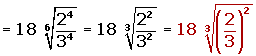
Raíz
La raíz de un radical es otro radical de igual radicando y cuyo índice es el producto de los dos índices.


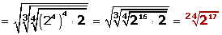
Racionalización
La racionalización de radicales consiste en quitar los radicales del denominador, lo que permite facilitar el cálculo de operaciones como la suma de fracciones.
Podemos distinguir tres casos:
1 Racionalización del tipo 
Se multiplica el numerador y el denominador por 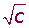.

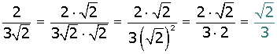
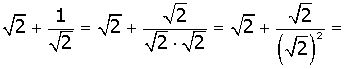

2 Racionalización del tipo 
Se multiplica numerador y denominador por 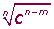.

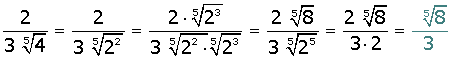
3 Racionalización del tipo 
Y en general cuando el denominador sea un binomio con al menos un radical.
Se multiplica el numerador y denominador por el conjugado del denominador.
El conjugado de un binomio es igual al binomio con el signo central cambiado:
También tenemos que tener en cuenta que: "suma por diferencia es igual a diferencia de cuadrados".

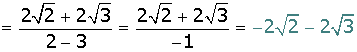


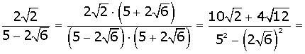